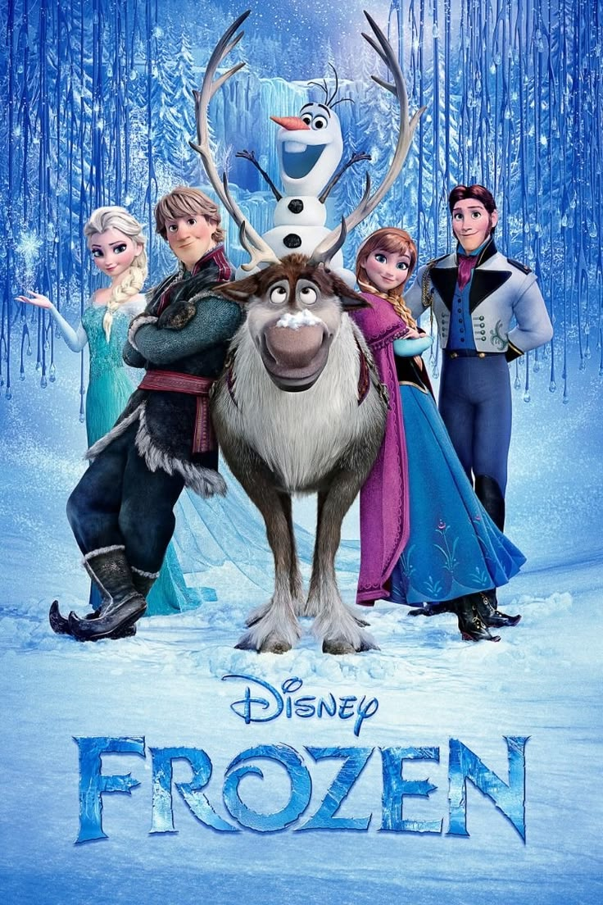
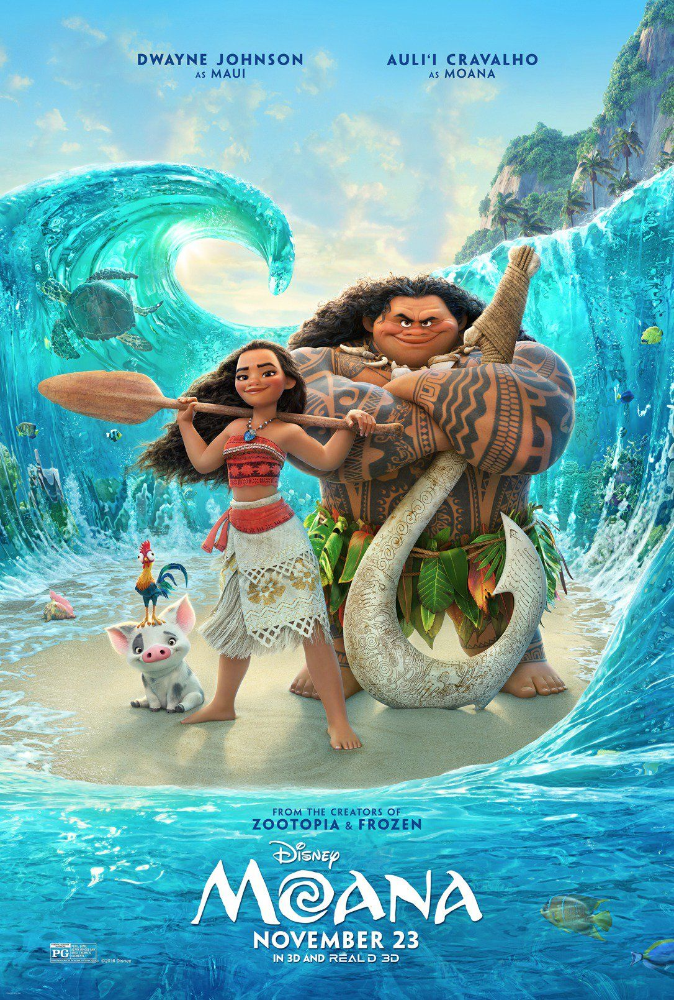

First
The Lion King

Main character: Simba
Release Year: 1994
Genre: Animation, Adventure, Drama
Antagonist: Scar
Director: Roger Allers and Rob Minkoff
The Lion King tells the story of Simba, a young lion prince who is forced into exile after his villainous uncle, Scar, murders his father, King Mufasa, and frames Simba for the death. While living a carefree life in the jungle with his new friends Timon and Pumbaa, Simba eventually realizes he cannot run from his past after a chance encounter with his childhood friend, Nala. Encouraged by the shaman Rafiki and the spirit of his father, Simba returns to the Pride Lands to challenge Scar, reclaim his rightful place as king, and restore the "Circle of Life" to his desolate home.
Second
Frozen

Main characters: Elsa and Anna
Release Year: 2013
Genre: Animation, Adventure, Comedy
Antagonist: Prince Hans
Director: Chris Buck and Jennifer Lee
Frozen (2013) tells the story of two estranged sisters, Anna and Elsa, princesses in the kingdom of Arendelle. Elsa possesses magical powers to create and control ice and snow, but after an accidental childhood injury to Anna, she is forced into isolation to suppress her growing abilities. On her coronation day, Elsa's powers are accidentally revealed to the public, causing her to flee to the mountains and inadvertently trap the kingdom in an eternal winter. Anna sets off on a dangerous journey to find her sister and bring back summer, joined by an ice harvester named Kristoff, his reindeer Sven, and a magical, sun-loving snowman named Olaf. The story culminates in a subversion of traditional fairy tales, where the "act of true love" needed to break the icy curse is not a romantic kiss, but the sacrificial love between the two sisters. .
Third
Moana

Main character: Moana
Release Year: 2016
Genre: Animation, Adventure, Comedy
Antagonist: Te Kā
Director: Ron Clements and John Musker
Moana (2016) follows the story of a spirited teenager who is chosen by the ocean to save her people when a mysterious blight begins to kill the plants and fish on her Polynesian island of Motunui. To heal her home, she must sail beyond the safety of the reef and find the legendary demigod Maui, who stole the heart of the goddess Te Fiti a millennium ago. Accompanied by her dim-witted pet chicken, Hei Hei, Moana eventually convinces the reluctant Maui to help her cross the open ocean, facing enormous monsters and personal doubts along the way. Ultimately, Moana discovers that the lava demon Te Kā is actually the heartless Te Fiti, and by restoring the goddess's heart, she saves her island and reclaims her tribe's ancient identity as voyagers.